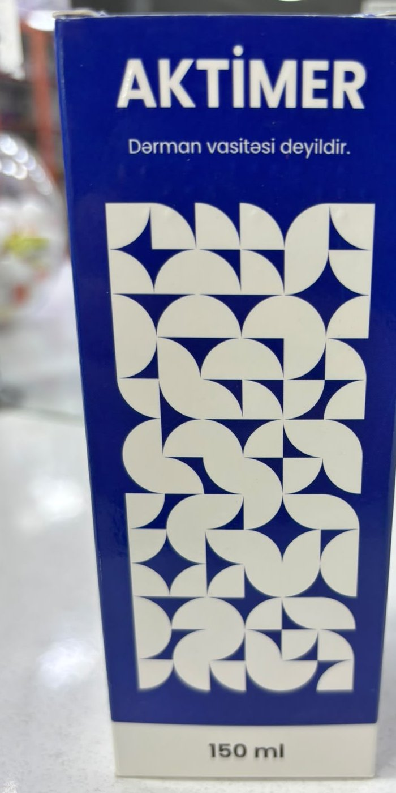
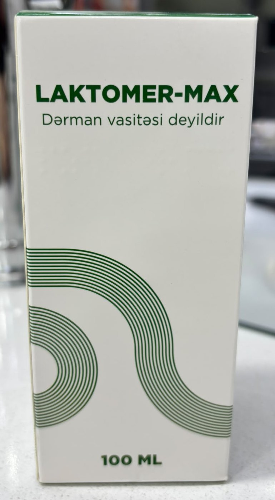
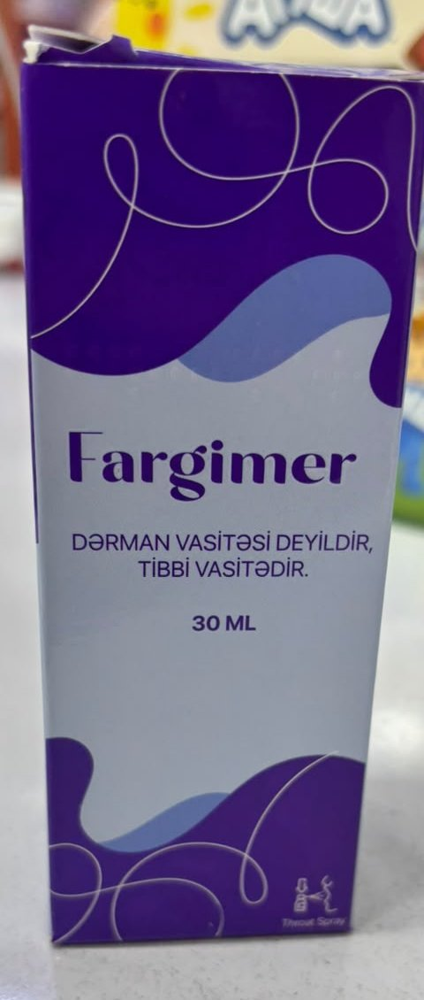
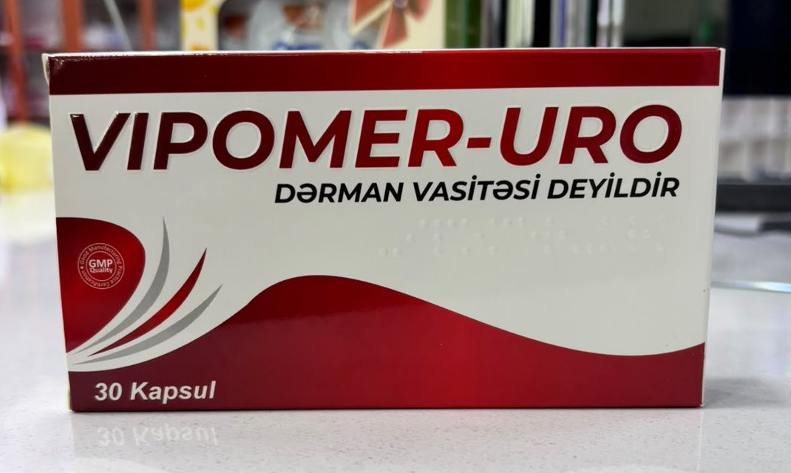

Dietary supplement
Karno Mer
Recommended to support the function of the cardiovascular system.
Explore each product's ingredients, directions and packaging photos.
Recommended to support the function of the cardiovascular system.

An additional source of vitamins D3 and K2 — 15 ml oral drops (50,000 IU).

To support the immune system — 10 vials × 15 ml solution.


A solution supporting the heart, brain and energy metabolism — 150 ml.

Plant extracts to support the immune system — 100 ml.


An additional source of magnesium and B vitamins — 30 capsules.

An amino-acid and vitamin C complex — 50 ml drops.

To support the function of the urinary system — 30 capsules.

An additional source of iron with folic acid, vitamin C and B12 — 100 ml.


A calcium, zinc, D3 and K1 complex — 60 capsules.
No matching products found. Call us: +994 50 277 94 34
Our pharmacists are happy to tell you more about our products.